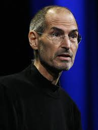

Judges
 Jobs and Wozniak co-founded Apple in 1976 to sell Wozniak's Apple I personal computer. Together the duo gained fame and wealth a year later with the Apple II, one of the first highly successful mass-produced microcomputers. Jobs saw the commercial potential of the Xerox Alto in 1979, which was mouse-driven and had a graphical user interface (GUI). This led to the development of the unsuccessful Apple Lisa in 1983, followed by the breakthrough Macintosh in 1984, the first mass-produced computer with a GUI. The Macintosh introduced the desktop publishing industry in 1985 with the addition of the Apple LaserWriter, the first laser printer to feature vector graphics. Jobs was forced out of Apple in 1985 after a long power struggle with the company's board and its then-CEO John Sculley. That same year, Jobs took a few of Apple's members with him to found NeXT, a computer platform development company that specialized in computers for higher-education and business markets. In addition, he helped to develop the visual effects industry when he funded the computer graphics division of George Lucas's Lucasfilm in 1986. The new company was Pixar, which produced the first 3D computer animated feature film Toy Story (1995).
Jobs and Wozniak co-founded Apple in 1976 to sell Wozniak's Apple I personal computer. Together the duo gained fame and wealth a year later with the Apple II, one of the first highly successful mass-produced microcomputers. Jobs saw the commercial potential of the Xerox Alto in 1979, which was mouse-driven and had a graphical user interface (GUI). This led to the development of the unsuccessful Apple Lisa in 1983, followed by the breakthrough Macintosh in 1984, the first mass-produced computer with a GUI. The Macintosh introduced the desktop publishing industry in 1985 with the addition of the Apple LaserWriter, the first laser printer to feature vector graphics. Jobs was forced out of Apple in 1985 after a long power struggle with the company's board and its then-CEO John Sculley. That same year, Jobs took a few of Apple's members with him to found NeXT, a computer platform development company that specialized in computers for higher-education and business markets. In addition, he helped to develop the visual effects industry when he funded the computer graphics division of George Lucas's Lucasfilm in 1986. The new company was Pixar, which produced the first 3D computer animated feature film Toy Story (1995).